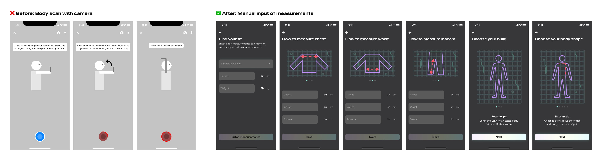
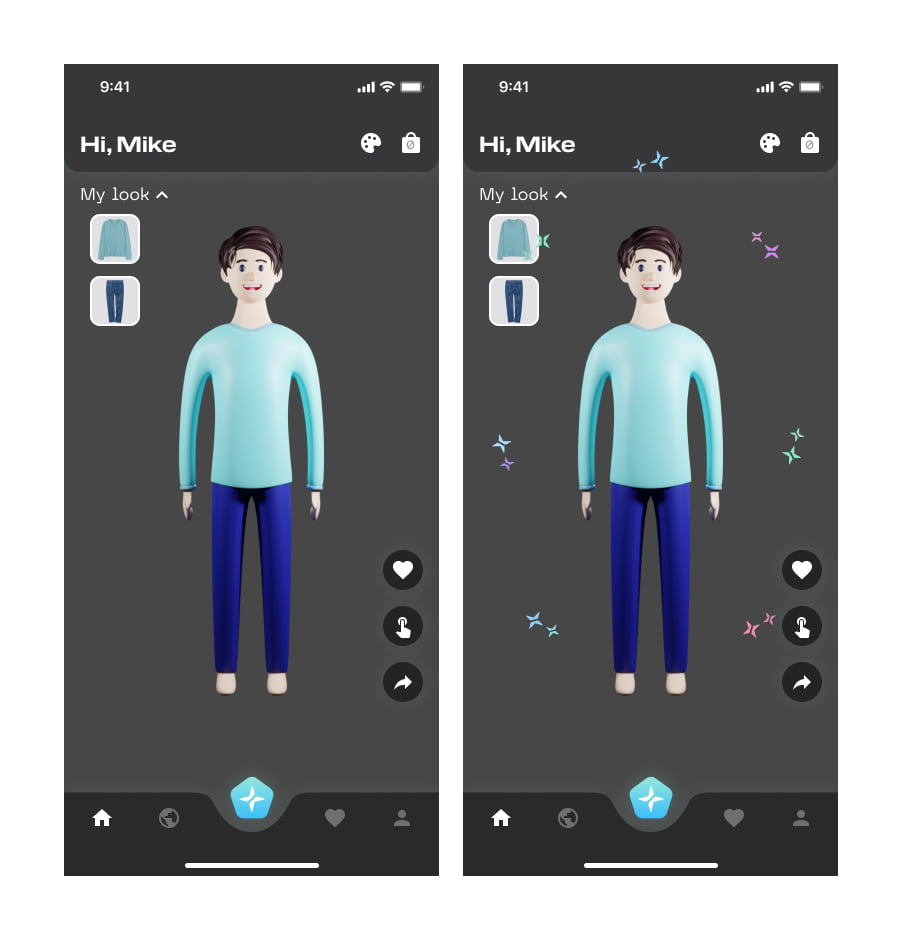
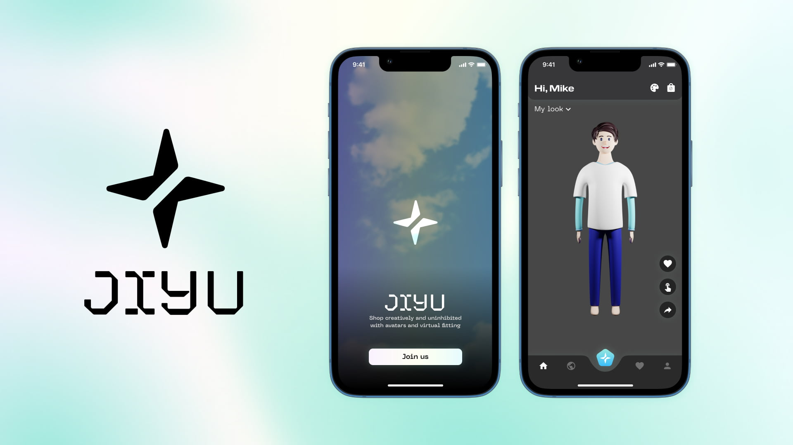
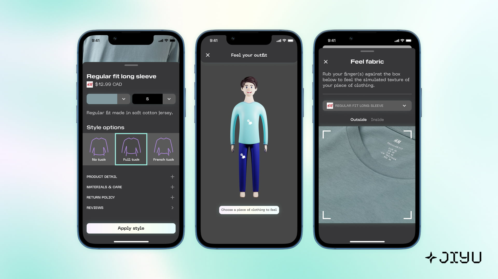
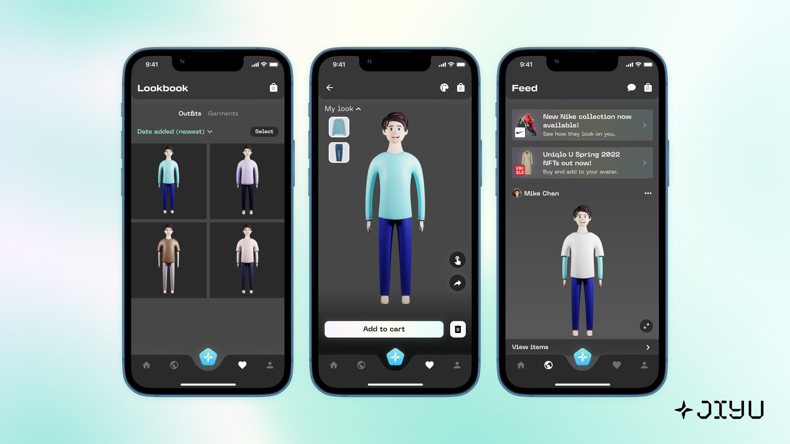

Background
This 0-to-1 project was for my undergrad thesis, iterated with end users. Since fitting rooms are messy + cramped and online shopping products can't be physically tried on, the Jiyu app gives a simpler way to shop online with a virtual fitting room and true-to-size avatar of the shopper. This helps shoppers find the right items and size, so they can express themselves fully and hone their style.
Role
Sole Product Designer, Researcher, Prototyper, PM, Content Writer
Tools
Figma, Blender, Illustrator, After Effects, Premiere Pro, Keynote
People Problem
In-store, only 1 in 10 shoppers are satisfied with fitting rooms—despite fitting rooms being where most purchase decisions happen, and boosting conversions by 7x when used.
Issue 1Messy, cramped, poorly lit rooms aren't secure and comfy. |
Issue 2Long queues dissuade trying items. |
Issue 3Inability to find items/sizes prevent purchase decisions. |
Issue 4Item limits prevent trying combinations. Shoppers are limited to trying 1 store at a time. |
Additionally—73% of Gen Z want more ways to express themselves online since it improves well-being. As digital natives and current/future consumers, they see identity as extending beyond the physical world, with online spaces being key to building friendships and showing who they are.
Understanding the user frustrations, solutions were ideated around:
How might we equip shoppers of all ages with a fitting room that enhances creativity & simplifies purchase decisions?
The solution, Jiyu
Jiyu is a mobile app that provides modular fitting of fashion items by creating an avatar of the shopper accurate to their body proportions. Core flows and functions:
• Dress up
• Scale + rotate avatar
• Style options
• Feel fabric (Home + PDP)
• Like an outfit + item
• Multi-brand carts + automatic coupons
• Feed
• Smart suggestions
• Re-order layers
Key Decisions
User testing
Once mid-fidelity screens and flows were made, concept tests were ran with 2 participants to get signal on visual directions, feature value, and usability to finetune a realistic, frictionless system. Key insights:
Conducting a body scan with phone camera to create an accurate avatar of the shopper was deemed unrealistic given current technological constraints. Thus, manual input of body measurements was used, with illustrations teaching the user how to measure their body.

Branding
The logo resembles the sparkle, which is tied to positive sentiments like love, happiness, beauty, and excitement. This fits its mission as a vessel for personal expression and influence via fashion, where everyone is encouraged to comfortably try items and self-express. To elevate brand presence, the logo is in the bottom nav and pulls double duty by resembling the “+” (connoting adding items to the avatar). Sparkle animations post-dressup communicate the outfit has been updated.

Learnings
Novelty is a game of remix
I initially planned for an avatar creator with an integrated NFT marketplace but struggled to differentiate from competitors, as it was too similar to products like Memoji or Maya. This dead-end led me to fuse the idea of an avatar creator with a virtual fitting room to define a new online shopping experience.
Business strategy, Web 3 & the creator class
To turn Jiyu into a viable business, I thought of how brands could benefit from a virtual, brand-agnostic fitting room. In Feed, Jiyu lets brands release limited edition or temporary NFT drops that shoppers can try through their avatar. Items or collections can be promoted based on a brand’s business goals and popularity. Celebrities can influence looks, brands, and items globally when they post to Feed.




